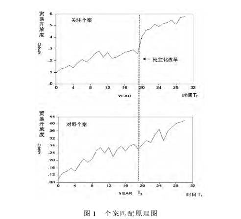
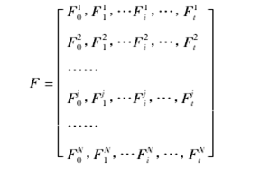

收录于合集
简
蒋建忠
南京政治学院马克思主义理论系政治学教研室讲师
【摘要】 社会科学研究的主要任务是从纷繁复杂的现象中发现事物之间普遍性的因果关联，“反事实”框架是揭示因果关系的主要路径。匹配方法是依据 “反事实”原理发展出来的新的因果推论方法，它已经在教育学、社会学等学科中得到较为普遍的应用。匹配方法在具体运用过程中形成个案匹配、倾向值匹配和纵贯匹配三项主要分析方法。从国际关系学科研究目的、数据特征、科学化演进的角度来看，匹配方法非常契合国际关系研究。匹配方法的实际操作过程可以分为匹配标准选择、匹配推论和稳健性检验三个部分，不同的匹配方法都包含若干特有的步骤和技巧。匹配方法有效地模仿自然科学的随机实验，比较好地达到了控制混淆变量、提升因果推论精确度的目的，拓展了国际关系定量研究方法。当然，匹配方法也存在局限性，它与传统研究方法是互相补充而不是取代的关系。
【关键词】 因果推论；“反事实”；个案匹配；倾向值匹配；纵贯匹配
作为一种新兴的统计技术，匹配方法也适合在国际关系学科中推广和普及，一方面，国际关系研究以观测性数据为主，匹配方法可以在观测性数据中尽可能模拟随机控制实验，从而控制混淆变量，实现国际关系研究因果推论的目的; 另一方面，国际关系学界主要是利用统计模型来建构不同变量之间的关系，进而验证其对因果关系的判断。然而，我们不能简单地将统计模型得到的相关关系与因果关系等同起来，而利用匹配方法可以获得变量间精确的因果关系。
匹配的理论基础——“反事实”原理与评析
(一) 因果推论的“反事实”原理
“反事实”框架是大卫·刘易斯等人提出的推断因果关系的标准。事实是指在某个特定变量( A) 的影响下可观测到的某种状态或结果( B) 。“反事实”是指在该特定变量( A) 取负向值时可观测到的状态或结果( B’) 。条件变量对于结果变量的因果性就是 A 成立时 B 的状态与 A 取负向值时 B 的“反事实”状态( B’) 之间的差异。B 与 B’之间的差异可认为是由条件变量 A 导致的。如果这种差异存在且在统计上是显著的，则说明条件变量对结果变量有显性效应，存在因果关系。
(二) “反事实”因果推论的两种实践路径
“反事实”框架从抽象的哲学层面说明了因果推论的基本遵循。在 20 世纪 30年代，占统治地位的“反事实”因果推论方法是控制法: 要证明因果关系，研究者必须精确地控制实验对象的一切，让实验组与对照组在除关注的变量外尽可能匹配和相像，这样研究者才能把观察到的结果差异归因于关注变量。因此，研究者要尽可能控制实验中的一切，甚至包括实验者的心理和情绪。
20世纪50年代，菲希尔( Ronald Fisher) 提出与其控制一切，不如什么都不控制，即采用纯随机实验的方法来实现“反事实”因果推论。研究者把研究对象设定为两个组，把实验对象随机分入两个组中，其中一组施加刺激，另一组不施加刺激，施加的刺激可以看作是考察的条件变量。然后把两个组进行比较，它们之间的结果差异可以归功于这种刺激。这样，在实验组与对照组之间就形成了事实与“反事实”，它们之间的差异就是因果效应。为什么随机实验能够满足“反事实”框架的要求? 其本质在于实验中的被试对象是随机地被分到实验组和对照组，其他可能的混淆变量在随机化的过程中都被均等地分到两组中，保证了实验组和对照组在关注的条件变量之外的混淆变量上取值是相同或近似的。此时实验组和对照组在结果上的差异就只能用刺激和随机误差这个因素来解释。当样本大到可以保证统计检定力时，随机误差的可能性大大降低。由此可见，随机实验通过随机化过程对研究对象具有比较明确的控制力，它能有效地建立事实与“反事实”进行两者的匹配和对照，进而按照“反事实”框架进行因果推论，这是帮助研究者建立“反事实”框架的理想模式。
(三) 社会科学“反事实”推论的困境
随机实验是符合当代因果分析“反事实”框架的黄金法则。但是，在以观测性数据为主的社会科学领域，纯随机实验是难以做到的，主要由于以下三个方面的原因: 首先，从逻辑来看，历史的不可回溯性导致“反事实”的不可观测性。其次，从伦理道德来看，在社会科学研究中将需要接受刺激的对象安排到没有任何刺激的控制组是违背伦理道德的。再次，从学科特征来看，社会科学的研究数据主要来源于调查和观测，难以实施随机控制。
匹配分析的主要技术
(一) 个案匹配
社会科学研究要实现严密的因果推论需要构建与被观测到个案相对应的“反事实”个案。显然，在社会现实和历史中几乎没有现存的“反事实”案例，而是需要通过综合很多没有经历过条件变量影响的个案，由此构造对照个案。对照个案构造的基本设想是通过某种加权方式将诸多没有受到条件变量影响的个案进行综合，使得在条件变量作用之前对照个案与研究者关注的个案具有相同或相似的历时性趋势。
在图1 中，通过对个案池中 N 个个案进行加权处理形成对照个案，使得在 Tt时刻前对照个案与关注个案的趋势基本相同。在 Tt时刻，A 国( 即关注个案) 实行了民主化改革，对照个案没有实行民主化改革，观察 Tt后 A 国与对照个案贸易开放度发展趋势，如果两者有显著的差别，显然，这种差别只可能是民主化改革造成的，从而挖掘出民主化改革与贸易开放度之间的因果关系。利用个案匹配方法进行因果推理的关键在于如何通过适当的加权方式将 N 个没有受到条件变量影响的个案综合起来形成对照个案，使之成为“反事实”。权重构造的基本设想是: 设个案池中每个个案受到的权重影响为: βT= ( b1，b2，…bN)，

利用个案匹配方法进行因果推理的关键在于如何通过适当的加权方式将 N 个没有受到条件变量影响的个案综合起来形成对照个案，使之成为“反事实”。权重构造的基本设想是: 设个案池中每个个案受到的权重影响为: βT = ( b1，b2，…bN ) ，在［T0，Tt］时间段内选择 n 个时间点，假设在每个时间点上关注个案对应的贸易开放度是 F0=［F0，F1，…，Fi，…，Ft］。个案池中任意个案在每个时间点上对应的贸易开放度数值可表示为如下的矩阵形式：

其中，［F0j ，F1j ，…Fji ，…，Fjt］代表个案池中第 j 个个案在各个时间点上的贸易开放度数值。所求解的权重β 是使关注个案的贸易开放度与构造的对照个案的贸易开放度的差最小，可表示为矩阵形式: min( βTF-F0) 2。上式的最优解就是符合要求的权重 β。
(二) 倾向值匹配
通过倾向值匹配方法控制混淆变量进而消除遗漏变量是社会科学大样本研究可使用的一种新兴统计工具。倾向值匹配方法主要是针对具有相同或相似倾向值的两个或多个案例，考察受到条件变量作用和没有受到条件变量作用情况下案例的结果。如果结果的差异是显著的，那么这种差异只能归因于条件变量，而不是其他的混淆变量，从而在条件变量与结果变量之间建立因果关系。倾向值匹配方法能够进行有效的因果推论呢的原因在于它符合“反事实”逻辑推理框架，判断两个案例能否进行事实与“反事实”匹配的标准就是倾向值。
(三) 纵贯匹配
纵贯匹配的基本原理是利用研究个体作为其自身的控制因素，在不同的时点上测量同一个个体，从而得到在关注的自变量取值不同时个体的表现情况。不同时点的个体便形成事实与“反事实”匹配，进而依据“反事实”原理进行因果推论。使用纵贯方式进行匹配时有两个基本要求: 第一，对于每一个研究对象，因变量至少要求被测两次，两次测量值之间应当存在差异。第二，依据匹配的原则，研究对象所关注的自变量在不同时点上的取值应是相反的。因此，纵贯匹配在估计诸如性别、民族之类的非时变变量的效果上几乎毫无用处。
匹配方法在国际关系研究领域的应用
(一) 匹配方法可以有效弥补国际关系因果推论的方法缺陷。
直至今日，国际关系研究主要是通过定性中的比较案例分析和定量中的大样本统计建构不同变量之间的关系来验证其对于因果关系的判断。然而，在国际关系因果推论方法中，比较案例分析被认为是比较弱的。具体来说，它主要包含以下两个缺陷: 一是变量选择误差。根据“反事实”原理，进行因果推论时首先要求研究者预测并识别所有可能的条件变量，然后选择那些在除关键条件变量外的其他变量上取值相同的案例来控制它们的影响。显然，要识别所有的条件变量并达到研究对象的同质性是非常困难的，它较多依赖于研究者对经验世界的判断。二是案例选择误差。比较案例分析往往选择恰好能证明因果关系的案例，对那些反面案例视而不见，这就没有保证每个案例被选中的概率是相等的。在那些未被关注的案例中，混淆变量可能对结果产生决定性的影响。
大样本统计是当前国际关系研究进行因果推论的主流模式。研究者既可以利用部分相关来控制某些被忽略变量的影响，也可以通过对许多案例的随机性考察来减少其他被忽略变量的影响。 但是，在因果推论中采用大样本统计也存在两个不可避免的缺陷: 一是从元认识来看，当用诸如多元回归模型建立变量之间的关系时，这种关系并不一定代表了一种因果关系。二是从具体操作实践来看，进行大样本统计时要求从总体中随机抽取大量样本，将每个案例视为“同质单元”。但是，绝大多数国际关系研究是从已有的历史资料中得到的观测性数据，受制于可获得性、数量限制等因素，抽取的样本往往不具备随机性。
由此可见，比较案例分析和大样本统计并不能控制所有的混淆变量，它只能挖掘已知的或可能产生影响的关键变量。尽管近年来发展起来的基于模糊值和多值集的质性比较分析方法可以考察多个因素和组合对结果的影响，但也只能分析无限多个条件变量中的有限变量，仍不能消除遗漏变量问题，从而导致因果推论带有或然性。因此，需要发展新的因果推论方法。匹配方法比较好地满足了因果推论的“反事实”框架，成为探究国际政治现象因果关系新的方法增长点。
(二) 匹配方法高度契合国际关系研究观测性数据的特征。
国际关系研究主要是从历史、档案以及现实发生的事件中获取数据和资料，它们属于观测性数据的范畴。观测性数据的典型特点是无法像实验性研究那样对被研究个案具有比较明确的控制力，研究者往往不可能分配和控制被研究个案对于关注变量特定水平的接受和拒绝，从而完全控制住作用于实验组和对照组的混淆变量。
匹配方法十分巧妙地完成了对混淆变量的控制。下面从一个混淆变量的情况谈起: 考察民主与和平之间的关系，假定贸易这一变量混淆了民主与和平之间的关系。一个比较直观的控制贸易的办法是将贸易这一变量细分成不同层次以保证每一个层次中国家的贸易额近似。这时在各个层次内部观察、确定民主与和平之间的关系。如果存在两个混淆变量( 贸易和文化相似度) ，我们可以将这两个混淆变量交互分成 4 个小组: 第一组为贸易额大且文化相似度高; 第二组为贸易额大且文化相似度低; 第三组为贸易额小且文化相似度高; 第四组为贸易额小且文化相似度低。接着在每组内部考察民主与和平之间的关系，然后平均起来进行推断。可见，通过分层的方法可以在观测性数据中完成对混淆变量的控制。但是，随着混淆变量增加，这种细分法就变得不合理甚至不可能了。匹配方法比较好地解决了多个混淆变量情况下的控制问题: 它不再关注每一个混淆变量的具体取值，而是关注利用匹配标准( 如倾向值) ，使所有这些需要考虑的混淆变量在经过匹配标准的过滤后都均等化地分配到事实组和“反事实”组。换句话说，无论有多少需要控制的混淆变量，我们都能够通过匹配方法将它们控制住，从而帮助我们得到关注的自变量与因变量之间的关系。由此可见，与随机实验方法类似，匹配方法在观测性数据中构建类似于随机实验中的实验组和对照组，进而实现因果推论。
(三) 匹配方法适时顺应了国际关系研究的科学化进程。
在国际关系研究中虽存在传统方法与科学方法之争，但使国际关系理论趋向精确化、普适化是学界主流的追求。作为科学方法论的组成部分之一，带有定量特征的匹配方法在这一进程中扮演着重要的角色。匹配方法是一种充满内在逻辑力量的模式，它为分析国际社会这样一个极其复杂多变的矛盾体准备了崭新的方法和手段。借助于倾向值等工具，对国际政治现象间的关系进行定量研究，变定性式的描述为定量式的证明，能够使国际关系研究更加精确化、规范化和科学化，从而更有利于发现国际关系的规律性和对现有理论进行科学的检验。
操作程序与案例讨论
（一）强化地缘经济色彩与加强政治互信
匹配方法具有其他定量研究方法不同的基本原理、操作过程和分析路径。具体而言，匹配方法主要有三个步骤: 选择匹配标准、根据匹配标准进行样本的匹配推断、稳健性检验。
根据匹配分析程序结合倾向值的具体特征，倾向值匹配主要涉及三个关键性步骤:
(1) 通过 Probit 或逻辑斯蒂( Logistic) 回归，利用自变量预测个体成为民主国家的概率，即倾向值得分; log( 成为民主国家的概率/1-成为民主国家的概率) = βX + е，或 Probit( 成为民主国家的概率) = βX + е
(2) 根据估计的倾向值得分，利用不同的匹配规则来考察民主对和平的影响。首先，把所有案例按是否是民主国家分成两组; 其次，在民主国家组中抽取个体( 假设倾向值为 c) ，然后从非民主国家组中找到倾向值与 c 最为接近的那个个体与之匹配; 再次，通过上述方法依次对所有个体进行匹配，得到依据倾向值为标准划分的多个匹配对。根据具有相同或相似倾向值的匹配对来分析民主国家和非民主国家在冲突上的差异，如果这种差异是显著的，则可以说明民主对和平有影响。
(3) 通过敏感性分析评估倾向值匹配过程的稳健性。下面根据上述步骤来分析民主与和平之间的因果关系。
超越与限度
超越：
匹配方法本质上是实验法在国际关系研究中的应用，通过事实( 实验组) 与“反事实”( 对照组) 的匹配达到因果推论的目的。与传统的比较案例分析和大样本统计相比，匹配方法具有两方面的优势: 一是因果推论的准确性。在对照个案构建时，通过复杂的权重设置，控制影响结果发生的所有混淆变量。在纵贯匹配中，利用个案自身来控制潜在的或无法控制的混淆变量。因此，依据匹配方法得到的因果关系在更大概率上减少了遗漏变量的可能性。二是因果推论的精确化。比较案例分析通过多个案例的比较，推导条件变量与结果变量之间的因果效应，而大样本统计甚至只能推断出变量之间的相关关系。匹配方法能定量地测算出因果效应: yIi － yNi 。由此可见，与比较案例分析和大样本统计相比，匹配方法更加符合“反事实”原理，通过尽可能控制混淆变量，挖掘变量之间的 “净效应”，在因果推论方面更为准确和精致。因此，符合“反事实”框架的匹配方法不仅是因果推论技术，而且是进行因果探索必须坚持的理念，它为国际关系研究打开了新的方法论天地。
限度：
第一、根据“反事实”的定义，定义“反事实”的关键在于改变条件变量的取值时，其他混淆因素必须保持不变。显然，无论是自然科学中的实验法还是社会科学中的匹配方法，实现完全的“反事实”匹配是无法完成的任务，研究者永远都无法确定是否已经穷尽并控制所有可能导致结果的变量。
第二，匹配方法并不考虑条件变量之间的相互作用而只关注某个条件变量的因果效应，因此无法实现国际政治现象的多变量分析和联合分析。个案匹配、倾向值匹配、纵贯匹配通过单个( 或多个) 案例构成事实与“反事实”的匹配来实现国际政治现象的单因解释。
（文章在尊重作者原意基础上有删减）
文章来源： 《国际关系研究》2017年第3期
筛选： 凌羽 编辑： 诗夏 ** 敖遊**
轻点下方广告支持我们
我们将更好地为您呈现精彩内容！